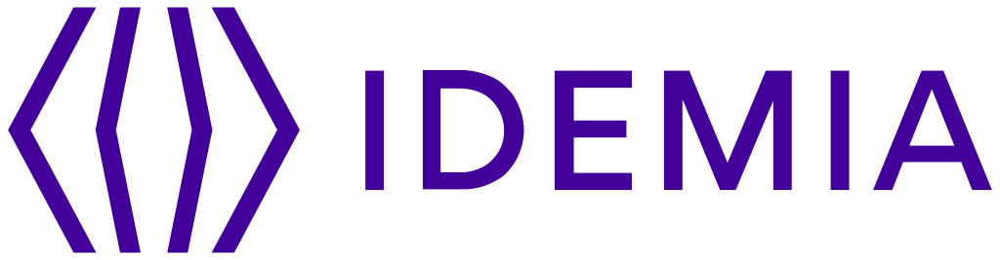
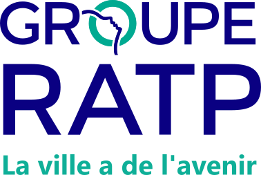
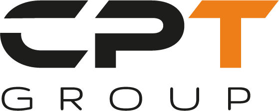

Production and systems engineer with strong expertise in critical infrastructure management and automation. Currently Control Bench Engineer on the Ariane 6 program (Linux administration, server process control and operational stability of the control bench). Previously 3+ years at Orange OBS / DNUM on 200+ critical government applications (N3 support, deployment automation and middleware hardening), then IDEMIA on international AFIS systems. Focus: reliable, highly available infrastructure.
Skills level
Estimated proficiency by domain, based on hands-on experience in critical production and system integration projects.
Technical expertise
Middleware & Application Servers
- Advanced deployment: Tomcat, Apache, PHP-FPM, WebSphere, Nginx, WebLogic
- Messaging & Streaming: RabbitMQ, Kafka
- Authentication & IAM: Keycloak, LDAP, Active Directory, CAS
Cloud & Containerization
- Orchestration: Docker, Kubernetes, Proxmox
- Virtualization: OpenStack, VMware, VSphere
DevOps & Automation
- CI/CD: Ansible, Git, Rundeck
- Scripting: Python, Bash, PowerShell
Monitoring & Observability
- ELK Stack: Elasticsearch, Logstash, Kibana, Metricbeat, Filebeat
- Supervision: Zabbix, Grafana, Cacti
- Scheduling: VTOM, Cron
Security & Infrastructure
- SSL/TLS security and certificate management
- Firewall: Firewalld, IPtables
- High availability: Heartbeat, Pacemaker, Nginx, HAProxy
Development
- Languages: Java (SE, J2EE), Python, C#, Ruby, Android
- Embedded systems: Microchip, Freescale, OS Yocto
Professional experience
Member of the team responsible for the operation and maintenance of Ariane 6 ground systems across France and Germany. Direct technical support during launch campaigns, focused on Linux administration and control-bench operational stability.
Missions & achievements
Coordination & operations
- Vendor coordination: planning and monitoring on-site maintenance interventions
- Continuous improvement of operational procedures to boost reliability and reduce costs
- Technical evaluation of innovative solutions for space-specific constraints
Incidents & infrastructure
- Jira incident management (CentOS OS, application, hardware, security)
- Electrical rack maintenance in high-availability critical environments
- Private cloud testbench on Proxmox for validation activities
Integration, automation & monitoring
- CentOS integration: bootable media, post-scripts, Docker deployment and validation
- Ansible / Shell automation for maintenance tasks
- ELK and Cacti monitoring + real-time RCR support during launch windows

Supervision and support of 200+ critical government applications in collaboration with the Digital Directorate of the Social Ministries. Specialized in deployment automation and middleware hardening.
Missions & achievements
- Level 3 support for application, middleware, OS, security and network via easyVista (CentOS, HP-UX, RedHat, Rocky Linux)
- Automated deployments with Ansible and Rundeck on Windows and Linux
- Middleware install/hardening: Tomcat, Apache, ELK stack, LDAP, Keycloak
- Vulnerability remediation and security patching
- VTOM batch management and Zabbix alert handling
- Workshops with TMA / project managers, production follow-up and SharePoint documentation
- 24/7 on-call to guarantee availability of critical applications

Installation and configuration of an AFIS system (MBIS) for a strategic South African project (Department of Home Affairs), in development and production environments.
Missions & achievements
- Java authentication on existing AFIS using LawTrust API and biometric scanner
- Product build, configuration management and install process
- Active Directory / LDAP administration (Windows Server)
- On-site mission in Pretoria: testing, installation and technical checkpoints with LawTrust
- Python scripts to test AFIS / external system web-service exchanges
- High-availability testing and RAC configuration preparation
Design and development of a Java desktop application for Fujitsu fingerprint-card scanners, as part of AFIS delivery for South Africa's DHA.
Missions & achievements
- Java BatchScanner application for biometric card digitization
- One-week Pretoria mission to install the software at client offices
- MBIS workflow integration (acquisition, validation, storage)
Upgrades and bug fixing for an Android fingerprint identification app with MorphoSmart CBM biometric terminals.
Missions & achievements
- Android features and fixes (Jira, TortoiseSVN)
- JNI / native C++ libraries to drive hardware
- J2EE RESTful web app (Maven, Jersey) to simulate failure scenarios

Maintenance and support of the critical TBE baggage sorting system on terminals E, F and G (UNIX HP-UX environment).
Missions & achievements
- Server checklists to ensure airport service continuity
- Log and Oracle database analysis (SQL Developer)
- Functional testing of IMS HMIs for command and control

Development of Ruby test scripts for the train schedule / offer system (Goal software package).
Missions & achievements
- Ruby test HMI (Ruby TK) to analyze generated files
- Advanced functional and technical checks
- Automatic execution reports (text and HTML)
Development of iOS and Android applications communicating with Ingenico payment terminals to execute test services.
Missions & achievements
- Mobile application with embedded HTTP server
- PCL protocol over Bluetooth with JSON results over HTTP
- End-to-end test automation

Design of a centralized patch server with C# / .NET / WPF HMI in a SCADA / IEC 61850 context.
Missions & achievements
- LAN discovery (hostname, IP, MAC) across OS types
- Schneider software inventory and comparison to reference versions
- Remote update proposal and deployment (WMI, Group Policy, VxWorks)

Software development for industrial supervision and embedded systems (wind power, smart breakers, Freescale boards, IEC 61850).
Missions & achievements
- NAPRO: Java HMI + Modbus RTU driver for wind-farm supervision (dsPIC33FJ)
- SGA: C/Java reverse engineering for PIC18/PIC32 breakers, charts, FFT
- iMX6Q SabreSD: embedded Linux OS (BSP/LTIB), GPU/CPU acceleration
- IEC 61850: study and partial protocol adaptation on Microchip
Education
Certifications
Languages
Professional qualities
- Expertise in solving complex problems
- Collaborative leadership and effective communication
- Innovation and continuous learning
- Autonomy and perseverance under pressure
Download CV
Available formats for recruiters and clients